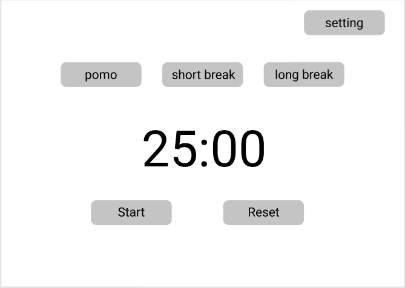
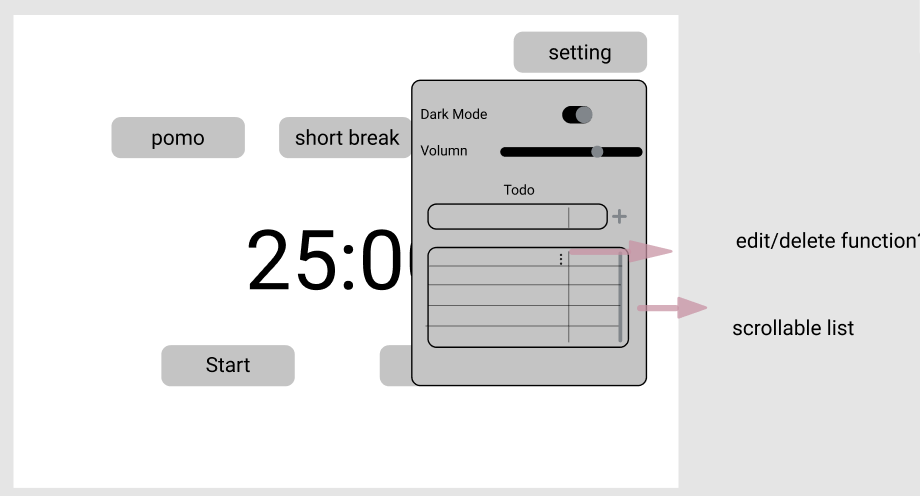
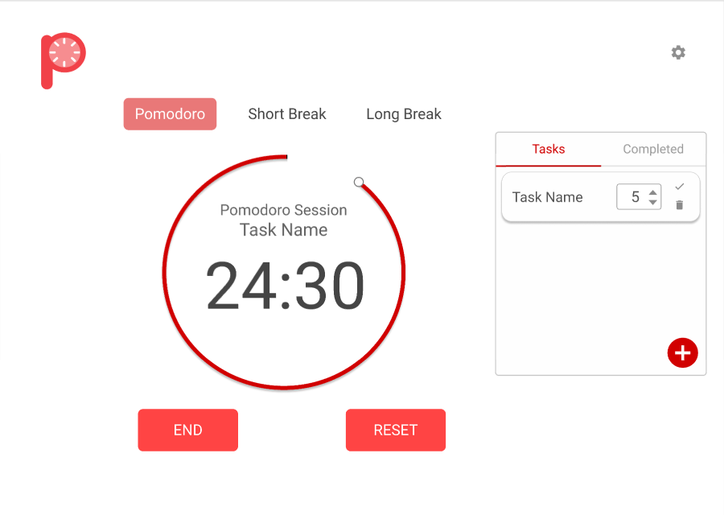
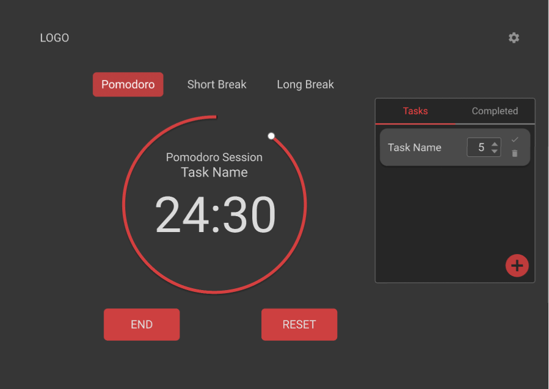
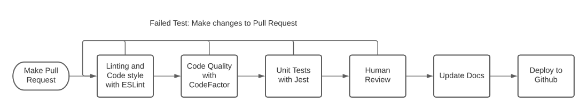
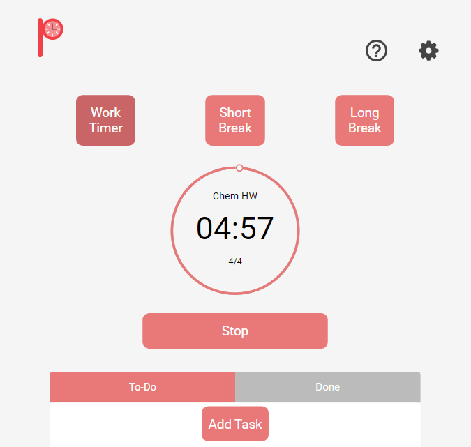
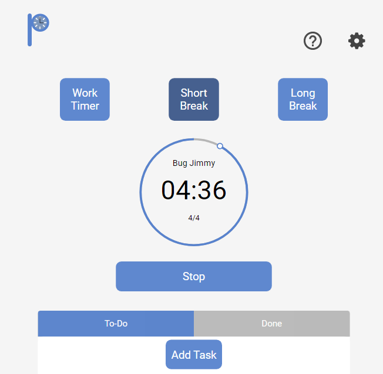
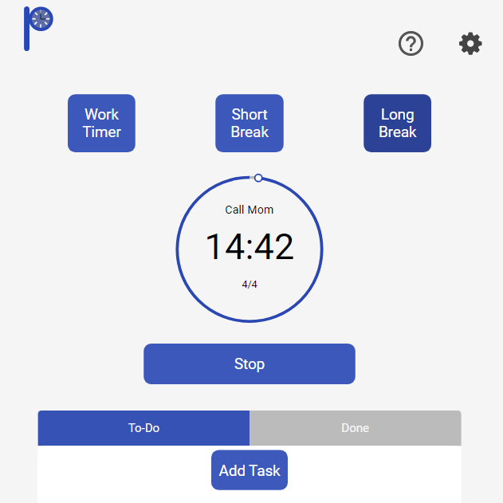

Case Study 2: Pomodoro Timer
Background
We’ve all been interrupted during a workflow at one point in our lives. It’s difficult to regain focus after getting
a text message from a friend or that one notification from your email or favorite social media site. Those small
interruptions add up and you lose precious time. It’s not only time you lose because of distractions but also the
time it takes for you to refocus.
The Pomodoro technique helps you plan out time to deal with those small interruptions and distractions without
taking away from your workflow. It allows you to put a pause on small distractions until you are at an appropriate
place to take a break and refocus your attention on handling that distraction.
It is often difficult to regain focus after being interrupted with a text message or notification from emails or social media sites. Office workers need a way to stay productive and complete their tasks while dealing with distractions at an appropriate time
Planning and Development
Architectural Design Records: Running a team requires a certain degree of trust and clarity. We established rules
written in a document stored in our repo that defines what is expected to be on the team and how to address situations
where rules are not followed.
Consensus may be reached via verbal interactions but preservation of these decisions are often lost over time particularly
if team members move on. To address the erosion of shared understanding of decisions, our team documented key decisions
in the form of Architectural Decision Records (ADRs) which highlight general project plans, approaches, and why specific
design/coding decisions were made. This is all so that major decisions are recorded and understood for current and possibly
future team members to avoid organizational debt.
User Centered Thinking: Our team created User Stories and User Personas to understand the needs
and thoughts of an ideal user to ensure user centered design. Since the Pomodoro Timer is a web application that will most likely
be used on a desktop, users need a way to get notified when to start a work session or when to take a break even if they are not looking
at a screen. Since desktops do not have a vibration feature like on smart-devices, our team decided to implement different sound
notifications for different sessions.
Comparative Analysis: Before diving into code, our team researched core features of what a Pomodoro Timer should have and
which features we thought would be helpful to implement. Some sample findings are listed below and in summary, our team decided to Incorporate
these features:
- No need to pay to use a timer: Everything is free! No need to pay for a premium version just to switch from light mode to dark mode for late night studying.
- Manual mode vs. Automatic: Some users like being able to control when to start a work session or a break and most Pomodoro Timer Apps on the market have these buttons in plain sight however, some users may find this to be too tedious and don't want to think about changing sessions. Our app includes an "automatic mode" that will change sessions for the user so that they do not have to worry about it. Our Pomodoro Timer has both modes so users have a choice in the matter!
- Ability to change the time for each session: Different Pomodoro techniques have different lengths of time for a work session or a break. We allow users to choose.
Competitors:
- Pomofocus: Pomofocus had a lot of features that were not core features of a Pomodoro Timer like having a day streak for every consecutive day the user logged into the site and a ranking chart to compare different users depending on how much time they had to focus.
- TomatoTimer: This timer web app is closer to centering around core features of a Pomodoro Timer and includes a few accessibility options like keyboard shortcuts and an FAQ section.
- TomatoTimers (tomatotimers.com) This web app has a cute UI and includes both manual mode and a looping feature (our version of "automatic mode"). However, this timer includes a pause button which violates the Pomodoro Technique. Some nice features of this web app is that it includes a walkthrough of a Pomodoro Session to help users get started.
System Diagrams: We created System diagrams on how our pomodoro timer web application will be decomposed. We adopted the C4 model which provides a way for our development team to effectively communicate our software architecture at different levels. Level 1 describes the system context or "the bigger picture", level 2 shows how responsibilities are distributed across the system and how each container communicates with each other, and level 3 dives deeper by showing each component in a container and their interactions with each other to make each component work.
System diagrams help plan out the flow of the components that make up our web application.
We then drafted some designs for the Pomodoro Timer:
 Designs in gray-scale to focus on core features and flow.
 
Designs with color in light and dark mode.
The goal: Our team decided that our Pomodoro Timer would be a front-end web application implemented solely in vanilla JavaScript, HTML, and CSS. The only third-party we used was for style, code quality checks, and automatic unit testing on the Pomodoro Timer’s GitHub page.
Testing
Before any Pomodoro Timer updates could be deployed, the commit would need to pass our pipeline checks that check for code quality,
style enforcement violations, and failing unit tests.

The CI/CD pipeline to guide the development process
Bug Finds:
- Sound Issues: In manual mode, the sound would play when a session would start instead of when a session would end. This bug was fixed by using a logic statement in the code to play a sound when a session finished instead of relying on when the CSS style c hanged.
- Dark Mode vs. Light Mode: There was feedback that when a user chooses dark mode and they refresh the page, the page would load on light mode and then switch to dark mode. This would be problematic if the user decided to use the Pomodoro Timer App in the dark where they will be blinded by white light for a second before being encompassed by darkness once more. This bug was fixed by automatically loading the application in dark mode and then switching to light mode if the user’s preference was originally light mode.
- Timer Tick is off by 1 second: There was a bug where the timer would be off by 1 second (If the timer was set for 25 minutes, the alarm would ring at 0:01 instead of 0:00). Our team decided that if the user chooses a time, to start the timer 1 second earlier so that the timer would end at 0:00 (if the timer was set for 25 minutes, to change the timer text to 24:59 on start)
Incorporated a To-Do List and Tour-Guide.
Accessibility
Our team wanted to increase user accessibility in our web application by addressing the following:
- Visibility of System Status: We implemented different color schemes for each of the three Pomodoro Sessions so that users know which session they are in.
- Match between system and the real world We made sure that the wording in the help guide uses language that everyday users are familiar with.
- User Control and Freedom: In the task list, users can bring back a task that was accidentally marked as "done".
- Consistency and Standards: Navigation buttons like "Next" or "Back" in our help guide are in the same position so users do not get confused.
- Flexibility and Efficiency of Use: Users who are new to the Pomodoro technique can opt to use "automatic mode" instead of "manual mode".
- Aesthetic and Minamalist Design: Our UI only shows the core features of a Pomodoro Timer. Other features like switching from dark mode to light mode are hidden in the settings menu
- Help and Documentation: Our help guide walks the user through using the Pomodoro Timer app.
- Google Lighthouse: Google Lighthouse identifies and fixes common problems that affect a site's performance and addresses some accessibility issues. Running it via the Chrome Developer Tools displays different metrics that our team tried to increase.
Deliverables
  Different Timer Themes
Reflection/Lessons learned - From this project, I learned a lot about teamwork and communication. Our team was
composed of designers and programmers but one of the most important aspects was bridging the communication gap
between the Design team and the Coding team to make sure everyone understood what the future plans are and what
goals should be accomplished before a certain deadline.
Future Plans: If there was more time, some future features to think about would address more user accessibility. During the project,
our team tried to address most of the user accessibility issues as outlined by Google Lighthouse. Some future plans include adding keyboard shortcuts to
start and reset timer buttons, error messages or warning notifications when a user is about to violate a Pomodoro Session or double-check if a user wants to
delete a task or move it to the "done" list.